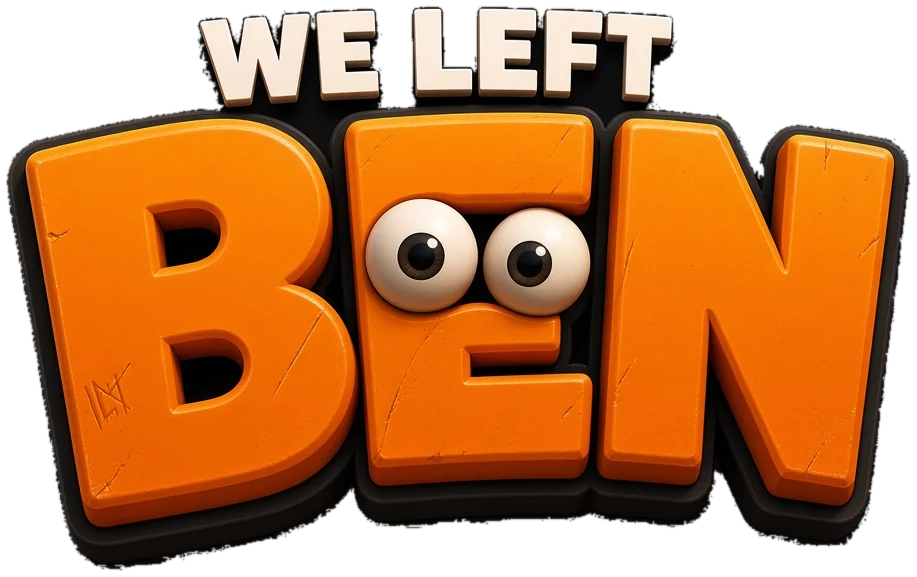

FUNLAND2 · PROTOTYPE 0

Horde survival in isometric 3D. We left him behind. He keeps leaving signs.
Left thumbMove. The stick appears where you touch and follows your thumb. Up is up the screen.
Right thumbAim. Push past the dashed ring to fire.
Tap right sideShove. Knocks zombies back: your get-off-me move.
GoalReach the green safe room. Don't shoot alarm cars (blinking red light) or fire alarms.
Desktop: WASD move · mouse aim · click fire · Space shove · R reload · Q swap · Esc tuning · gamepad works too
iPhone: Share → Add to Home Screen for true full screen.
The sliders button (top right) pauses and opens live feel tuning.
Prototype 1: WOBBLE WAR, a wobbly battle simulator →